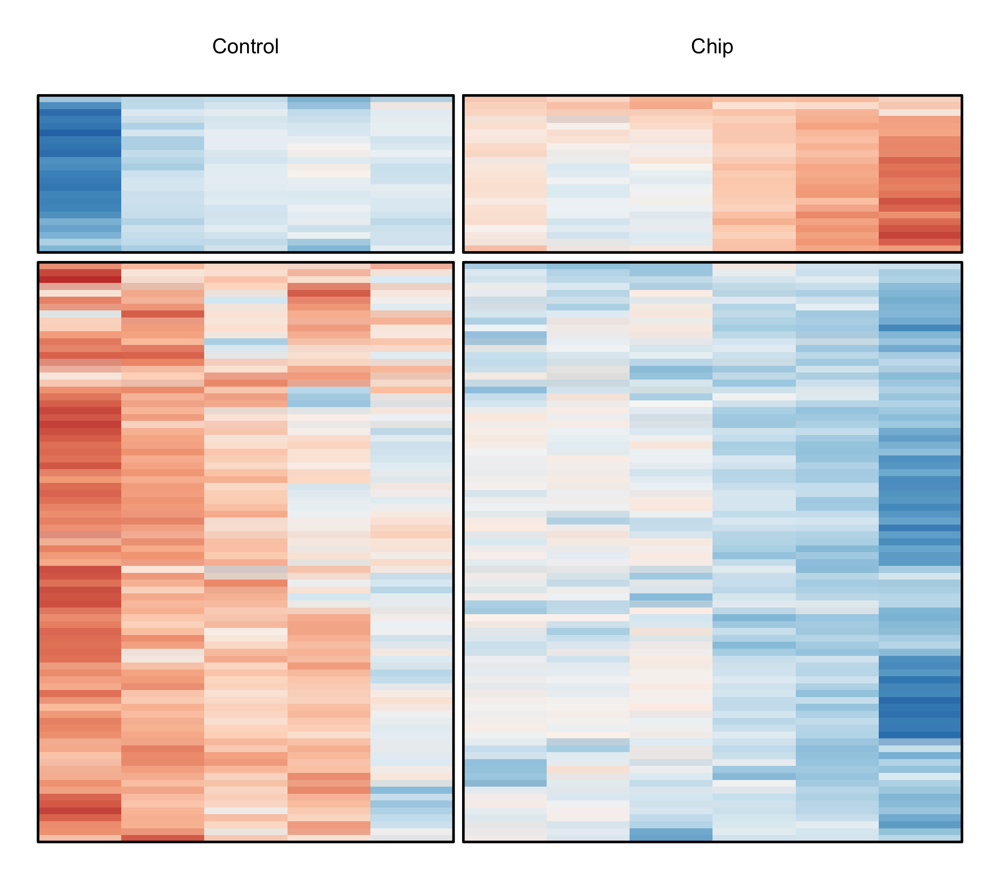
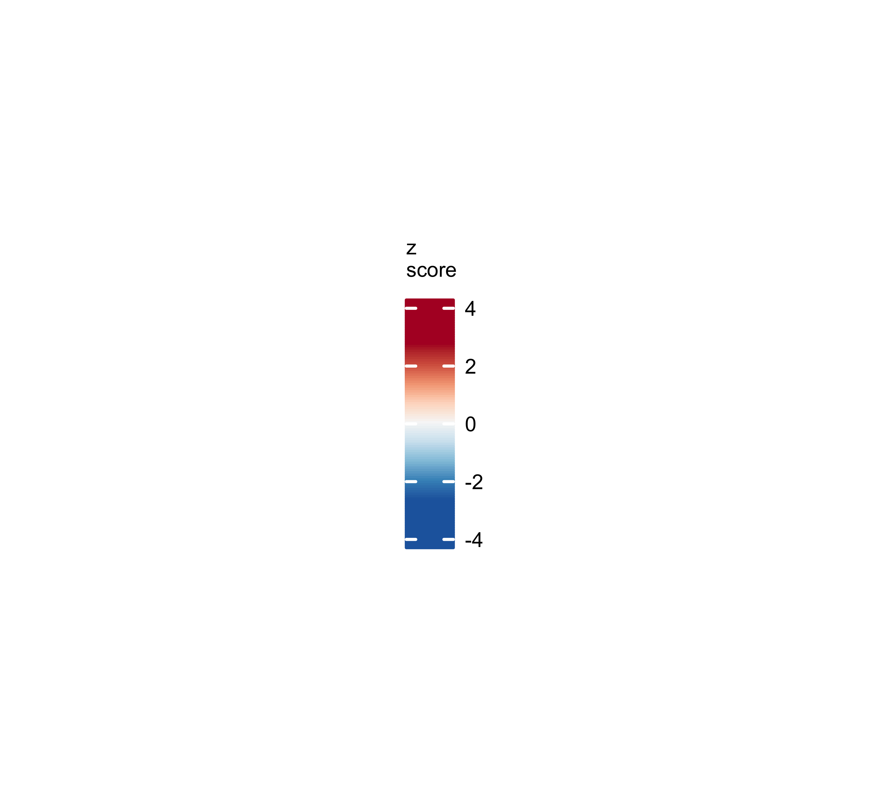
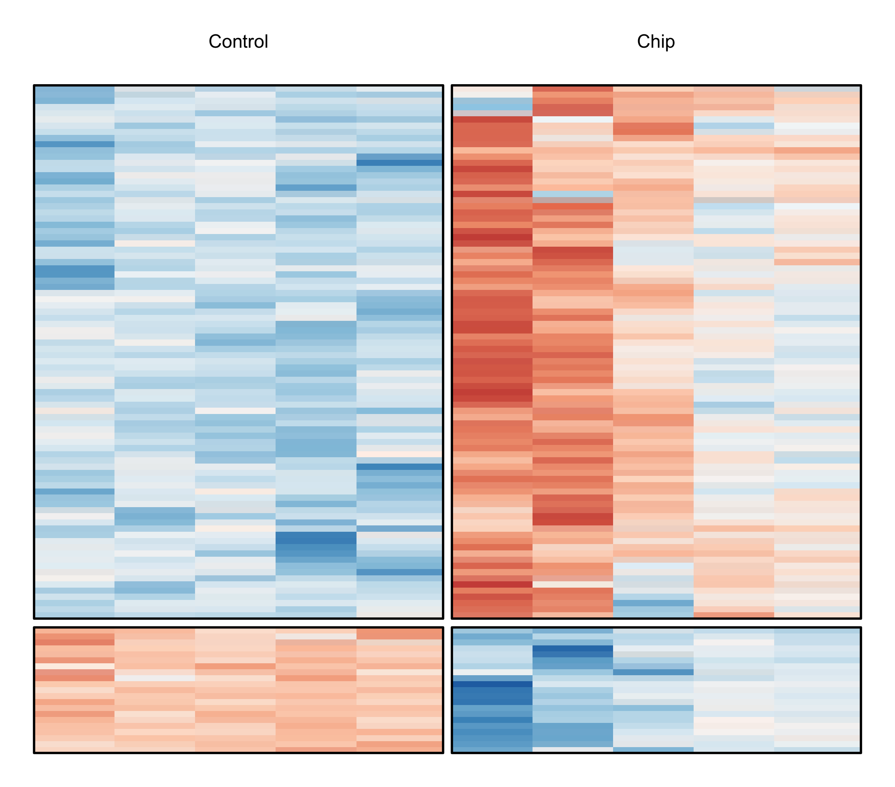
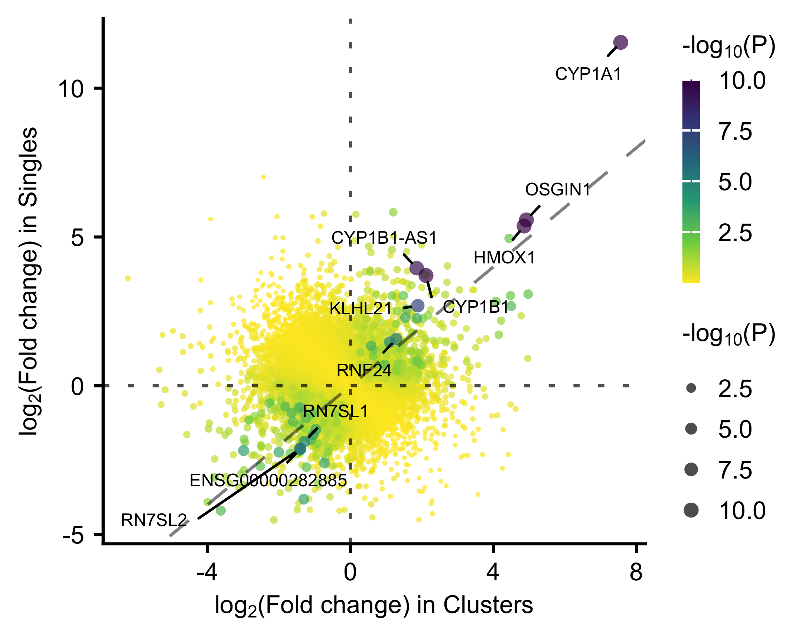
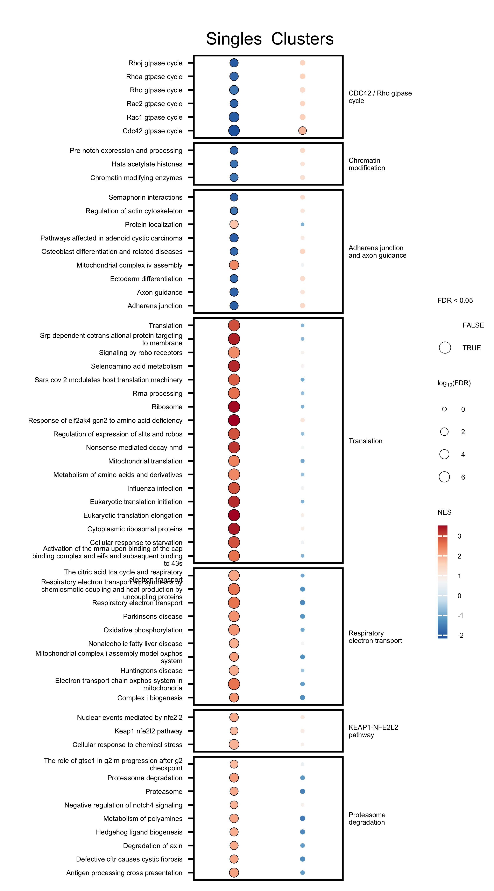
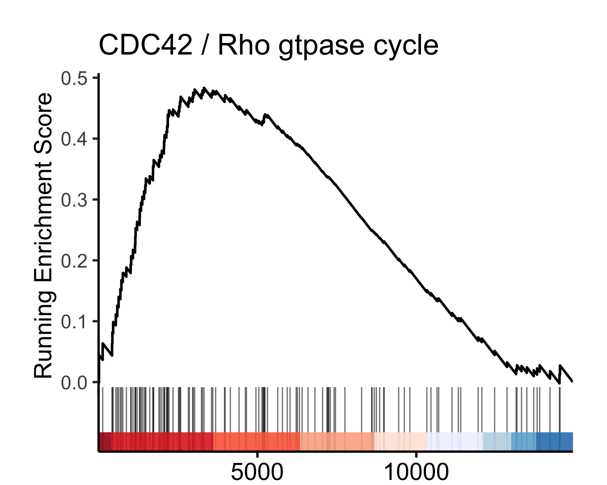

Last updated: 2025-01-08
Checks: 7 0
Knit directory: ildiz-ctc-shear-stress/
This reproducible R Markdown analysis was created with workflowr (version 1.7.1). The Checks tab describes the reproducibility checks that were applied when the results were created. The Past versions tab lists the development history.
Great! Since the R Markdown file has been committed to the Git repository, you know the exact version of the code that produced these results.
Great job! The global environment was empty. Objects defined in the global environment can affect the analysis in your R Markdown file in unknown ways. For reproduciblity it’s best to always run the code in an empty environment.
The command set.seed(20250108) was run prior to running
the code in the R Markdown file. Setting a seed ensures that any results
that rely on randomness, e.g. subsampling or permutations, are
reproducible.
Great job! Recording the operating system, R version, and package versions is critical for reproducibility.
Nice! There were no cached chunks for this analysis, so you can be confident that you successfully produced the results during this run.
Great job! Using relative paths to the files within your workflowr project makes it easier to run your code on other machines.
Great! You are using Git for version control. Tracking code development and connecting the code version to the results is critical for reproducibility.
The results in this page were generated with repository version ce461f6. See the Past versions tab to see a history of the changes made to the R Markdown and HTML files.
Note that you need to be careful to ensure that all relevant files for
the analysis have been committed to Git prior to generating the results
(you can use wflow_publish or
wflow_git_commit). workflowr only checks the R Markdown
file, but you know if there are other scripts or data files that it
depends on. Below is the status of the Git repository when the results
were generated:
Ignored files:
Ignored: .Rhistory
Ignored: .Rproj.user/
Ignored: data/crispr/
Ignored: data/resources/
Ignored: data/rnaseq/
Untracked files:
Untracked: analysis/rnaseq-bulk-br16-time_series.Rmd
Untracked: analysis/rnaseq-bulk-brx07-time_series.Rmd
Untracked: analysis/rnaseq-bulk-brx50-time_series.Rmd
Untracked: code/R-functions/
Untracked: configuration/
Untracked: output/crispr/
Untracked: output/rnaseq/
Unstaged changes:
Modified: .gitignore
Modified: ildiz-ctc-shear-stress.Rproj
Note that any generated files, e.g. HTML, png, CSS, etc., are not included in this status report because it is ok for generated content to have uncommitted changes.
These are the previous versions of the repository in which changes were
made to the R Markdown
(analysis/rnaseq-low_input-br16-t150.Rmd) and HTML
(docs/rnaseq-low_input-br16-t150.html) files. If you’ve
configured a remote Git repository (see ?wflow_git_remote),
click on the hyperlinks in the table below to view the files as they
were in that past version.
| File | Version | Author | Date | Message |
|---|---|---|---|---|
| html | fdfab95 | Francesc Castro-Giner | 2025-01-08 | Build site. |
| Rmd | caff916 | Francesc Castro-Giner | 2025-01-08 | add bulk and low-input RNA-seq analysis |
Setup environment
knitr::opts_chunk$set(results='asis', echo=TRUE, message=FALSE, warning=FALSE, error=FALSE, fig.align = 'center', fig.width = 3.5, fig.asp = 0.618, dpi = 600, dev = c("png", "pdf"), engine.opts = list(bash = "-l"))
options(stringsAsFactors = FALSE)
use_seed <- 1100101
set.seed(use_seed)
dir.create(params$output_dir, recursive = TRUE, showWarnings = FALSE)Load packages
library(tidyverse)
library(showtext)
library(foreach)
library(DT)
library(knitr)
library(kableExtra)
library(cowplot)
library(colorblindr)
library(RColorBrewer)
library(ggbeeswarm)
library(ggrepel)
library(magrittr)
library(openxlsx)
library(ggrepel)
library(SummarizedExperiment)
library(edgeR)
library(DESeq2)
library(scuttle)
library(scran)
library(pheatmap)
library(PCAtools)
library(org.Hs.eg.db)
library(ComplexHeatmap)
library(circlize)
library(UpSetR)
library(enrichplot)
library(DOSE)Clean files generated in previous runs
rmd_file <- current_input()
if(!is.null(rmd_file)) {
figures_dir <- file.path('./docs/figure',rmd_file)
if(dir.exists(figures_dir)) {
unlink(file.path(figures_dir, "*"))
}
}Load ggplot theme
source("./configuration/rmarkdown/ggplot_theme.R")Set color palettes
Load custom functions
source('./code/R-functions/dge_wrappers.r')
source('./code/R-functions/dge_report.r')
source('./code/R-functions/gse_omnibus.r')
source('./code/R-functions/gse_report.r')
clean_msigdb_names <- function(x) x %>% gsub('REACTOME_', '', .) %>% gsub('WP_', '', .) %>% gsub('BIOCARTA_', '', .) %>% gsub('KEGG_', '', .) %>% gsub('PID_', '', .) %>% gsub('GOBP_', '', .) %>% gsub('_', ' ', .) %>% str_to_sentenceDefine additional functions
clean_sample_alias <- function(x)
gsub('o[0-9]*_[0-9]*-|_cDNA.*|_gDNA.*|_S.*_R1_001|ESI_', '', x)Define functions for GSEA running score plot, using the original function from enrichplot package
##' extract gsea result of selected geneSet
##'
##'
##' @title gsInfo
##' @param object gseaResult object
##' @param geneSetID gene set ID
##' @return data.frame
##' @author Guangchuang Yu
## @export
gsInfo <- function(object, geneSetID) {
geneList <- object@geneList
if (is.numeric(geneSetID))
geneSetID <- object@result[geneSetID, "ID"]
geneSet <- object@geneSets[[geneSetID]]
exponent <- object@params[["exponent"]]
df <- gseaScores(geneList, geneSet, exponent, fortify=TRUE)
df$ymin <- 0
df$ymax <- 0
pos <- df$position == 1
h <- diff(range(df$runningScore))/20
df$ymin[pos] <- -h
df$ymax[pos] <- h
df$geneList <- geneList
df$Description <- object@result[geneSetID, "Description"]
return(df)
}
gseaScores <- getFromNamespace("gseaScores", "DOSE")
gseaplot <- function (x, geneSetID, by = "all", title = "",
color='black', color.line="green",
color.vline="#FA5860", ...){
by <- match.arg(by, c("runningScore", "preranked", "all"))
gsdata <- gsInfo(x, geneSetID)
p <- ggplot(gsdata, aes_(x = ~x)) +
theme_dose() + xlab("Position in the Ranked List of Genes")
if (by == "runningScore" || by == "all") {
p.res <- p + geom_linerange(aes_(ymin=~ymin, ymax=~ymax), color=color)
p.res <- p.res + geom_line(aes_(y = ~runningScore), color=color.line,
size=1)
enrichmentScore <- x@result[geneSetID, "enrichmentScore"]
es.df <- data.frame(es = which.min(abs(p$data$runningScore - enrichmentScore)))
p.res <- p.res + geom_vline(data = es.df, aes_(xintercept = ~es),
colour = color.vline, linetype = "dashed")
p.res <- p.res + ylab("Running Enrichment Score")
p.res <- p.res + geom_hline(yintercept = 0)
}
if (by == "preranked" || by == "all") {
df2 <- data.frame(x = which(p$data$position == 1))
df2$y <- p$data$geneList[df2$x]
p.pos <- p + geom_segment(data=df2, aes_(x=~x, xend=~x, y=~y, yend=0),
color=color)
p.pos <- p.pos + ylab("Ranked List Metric") +
xlim(0, length(p$data$geneList))
}
if (by == "runningScore")
return(p.res + ggtitle(title))
if (by == "preranked")
return(p.pos + ggtitle(title))
p.pos <- p.pos + xlab(NULL) + theme(axis.text.x = element_blank(),
axis.ticks.x = element_blank())
p.pos <- p.pos + ggtitle(title) +
theme(plot.title=element_text(hjust=0.5, size=rel(2)))
plot_grid(p.pos, p.res, ncol=1, align="v")
}
gseaplot2 <- function(x, geneSetID, title = "", color="green", base_size = 11,
rel_heights=c(1.5, .5, 1), subplots = 1:3,
pvalue_table = FALSE, ES_geom="line", ES_line_size = 1,
p2_rect_alpha = 0.9, linerange_alpha = 1, linerange_width = 1) {
ES_geom <- match.arg(ES_geom, c("line", "dot"))
geneList <- position <- NULL ## to satisfy codetool
if (length(geneSetID) == 1) {
gsdata <- gsInfo(x, geneSetID)
} else {
gsdata <- do.call(rbind, lapply(geneSetID, gsInfo, object = x))
}
p <- ggplot(gsdata, aes_(x = ~x)) + xlab(NULL) +
theme_classic(base_size) +
theme(#panel.grid.major = element_line(colour = "grey92"),
#panel.grid.minor = element_line(colour = "grey92"),
panel.grid.major = element_blank(),
panel.grid.minor = element_blank(),
panel.grid.major.y = element_blank(),
panel.grid.minor.y = element_blank()) +
scale_x_continuous(expand=c(0,0))
if (ES_geom == "line") {
es_layer <- geom_line(aes_(y = ~runningScore, color= ~Description),
size=ES_line_size)
} else {
es_layer <- geom_point(aes_(y = ~runningScore, color= ~Description),
size=1, data = subset(gsdata, position == 1))
}
p.res <- p + es_layer +
theme(legend.position = c(.8, .8), legend.title = element_blank(),
legend.background = element_rect(fill = "transparent"))
p.res <- p.res + ylab("Running Enrichment Score") +
theme(axis.text.x=element_blank(),
axis.ticks.x=element_blank(),
axis.line.x=element_blank(),
plot.margin=margin(t=.2, r = .2, b=0, l=.2, unit="cm"))
i <- 0
for (term in unique(gsdata$Description)) {
idx <- which(gsdata$ymin != 0 & gsdata$Description == term)
gsdata[idx, "ymin"] <- i
gsdata[idx, "ymax"] <- i + 1
i <- i + 1
}
p2 <- ggplot(gsdata, aes_(x = ~x)) +
geom_linerange(aes_(ymin=~ymin, ymax=~ymax, color=~Description,
alpha = linerange_alpha),
linewidth = linerange_width) +
xlab(NULL) + ylab(NULL) + theme_classic(base_size) +
theme(legend.position = "none",
plot.margin = margin(t=-.1, b=0,unit="cm"),
axis.ticks = element_blank(),
axis.text = element_blank(),
axis.line.x = element_blank()) +
scale_x_continuous(expand=c(0,0)) +
scale_y_continuous(expand=c(0,0))
if (length(geneSetID) == 1) {
## geneList <- gsdata$geneList
## j <- which.min(abs(geneList))
## v1 <- quantile(geneList[1:j], seq(0,1, length.out=6))[1:5]
## v2 <- quantile(geneList[j:length(geneList)], seq(0,1, length.out=6))[1:5]
## v <- sort(c(v1, v2))
## inv <- findInterval(geneList, v)
v <- seq(1, sum(gsdata$position), length.out=9)
inv <- findInterval(rev(cumsum(gsdata$position)), v)
if (min(inv) == 0) inv <- inv + 1
col <- c(rev(brewer.pal(5, "Blues")), brewer.pal(5, "Reds"))
ymin <- min(p2$data$ymin)
yy <- max(p2$data$ymax - p2$data$ymin) * .3
xmin <- which(!duplicated(inv))
xmax <- xmin + as.numeric(table(inv)[as.character(unique(inv))])
d <- data.frame(ymin = ymin, ymax = yy,
xmin = xmin,
xmax = xmax,
col = col[unique(inv)])
p2 <- p2 + geom_rect(
aes_(xmin=~xmin,
xmax=~xmax,
ymin=~ymin,
ymax=~ymax,
fill=~I(col)),
data=d,
alpha=p2_rect_alpha,
inherit.aes=FALSE)
}
## p2 <- p2 +
## geom_rect(aes(xmin=x-.5, xmax=x+.5, fill=geneList),
## ymin=ymin, ymax = ymin + yy, alpha=.5) +
## theme(legend.position="none") +
## scale_fill_gradientn(colors=color_palette(c("blue", "red")))
df2 <- p$data #data.frame(x = which(p$data$position == 1))
df2$y <- p$data$geneList[df2$x]
p.pos <- p + geom_segment(data=df2, aes_(x=~x, xend=~x, y=~y, yend=0),
color="grey")
p.pos <- p.pos +
# ylab("Ranked List Metric") +
ylab(expression(paste("lo", g[2],"(Fold change)")))+
xlab("Rank in Ordered Dataset") +
theme(plot.margin=margin(t = -.1, r = .2, b=.2, l=.2, unit="cm"))
if (!is.null(title) && !is.na(title) && title != "")
p.res <- p.res + ggtitle(title)
if (length(color) == length(geneSetID)) {
p.res <- p.res + scale_color_manual(values=color)
if (length(color) == 1) {
p.res <- p.res + theme(legend.position = "none")
p2 <- p2 + scale_color_manual(values = "black")
} else {
p2 <- p2 + scale_color_manual(values = color)
}
}
if (pvalue_table) {
pd <- x[geneSetID, c("Description", "pvalue", "p.adjust")]
# pd <- pd[order(pd[,1], decreasing=FALSE),]
rownames(pd) <- pd$Description
pd <- pd[,-1]
pd <- round(pd, 4)
tp <- tableGrob2(pd, p.res)
p.res <- p.res + theme(legend.position = "none") +
annotation_custom(tp,
xmin = quantile(p.res$data$x, .5),
xmax = quantile(p.res$data$x, .95),
ymin = quantile(p.res$data$runningScore, .75),
ymax = quantile(p.res$data$runningScore, .9))
}
plotlist <- list(p.res, p2, p.pos)[subplots]
n <- length(plotlist)
plotlist[[n]] <- plotlist[[n]] +
theme(axis.line.x = element_line(),
axis.ticks.x=element_line(),
axis.text.x = element_text())
if (length(subplots) == 1)
return(plotlist[[1]] + theme(plot.margin=margin(t=.2, r = .2, b=.2,
l=.2, unit="cm")))
if (length(rel_heights) > length(subplots))
rel_heights <- rel_heights[subplots]
plot_grid(plotlist = plotlist, ncol=1, align="v", rel_heights=rel_heights)
}Load MSigDB files
msigdb_vs <- 'v2022.1.Hs'
gmt_files_symbols <- list(
msigdb.c2.cp = paste0('./data/resources/MSigDB/', msigdb_vs, '/c2.cp.', msigdb_vs, '.symbols.gmt')
)se <- readRDS(params$se_file)Filtering out low-abundance features. Keeping those features with at least 10 counts in at least 70% of samples of the smallest group.
# use_rows <- filterByExpr(se, group=paste(se$donor, se$condition), min.count = 10, min.total.count = 15, min.prop = 0.5)
use_rows <- filterByExpr(se, group=paste(se$donor, se$condition), min.count = 1, min.prop = 0.3)
se <- se[use_rows,]
# Update PerCellQCMetrics
colData(se) <- colData(se) %>% data.frame %>% dplyr::select(-(sum:subsets_Ribo_percent)) %>% DataFrame
se <- addPerCellQCMetrics(
se,
subsets=list(
Mito=which(rowData(se)$is.mito),
Ribo=which(rowData(se)$is.ribo)
),
percent.top = c(1,5,10,20, 50, 100),
threshold = 3
)
# # Table of removed features
# table(use_rows) %>%
# data.frame %>%
# mutate(use_rows = ifelse(use_rows == TRUE, 'keep', 'remove')) %>%
# column_to_rownames('use_rows') %>%
# kbl(caption = 'Filtered features') %>%
# kable_paper(bootstrap_options = c("striped", "hover", "condensed"), full_width = F)TMM normalization
norm_method <- "TMM"
exprs_mat_for_norm <- assay(se, 'counts')
norm_factors <- calcNormFactors(exprs_mat_for_norm, method = norm_method)
lib_size <- colSums(exprs_mat_for_norm)/10^6
se$size_factor <- (norm_factors * lib_size)
se <- logNormCounts(se, size.factors =se$size_factor)
se <- logNormCounts(se, size.factors =se$size_factor, log = FALSE)x <- colData(se) %>% data.frame
comp_list <- list(
Condition = list(
Chip = x %>%
filter(condition == 'Chip') %>%
pull(sample_alias) %>%
sort,
Control = x %>%
filter(condition == 'Control') %>%
pull(sample_alias) %>%
sort
),
condition_clusters = list(
Chip = x %>%
filter(condition == 'Chip' & ctc_type == 'ctc_cluster') %>%
pull(sample_alias) %>%
sort,
Control = x %>%
filter(condition == 'Control' & ctc_type == 'ctc_cluster') %>%
pull(sample_alias) %>%
sort
),
condition_singles = list(
Chip = x %>%
filter(condition == 'Chip' & ctc_type == 'ctc_single') %>%
pull(sample_alias) %>%
sort,
Control = x %>%
filter(condition == 'Control' & ctc_type == 'ctc_single') %>%
pull(sample_alias) %>%
sort
)
)Run differential expression analysis using DESeq
use_comp <- comp_list[[1]]
dge_list <- foreach(use_comp = comp_list) %do%{
se_cols <- se$sample_alias %in% unlist(use_comp)
use_se <- se[,se_cols]
use_se$group <- ifelse(
use_se$sample_alias %in% use_comp[[1]],
names(use_comp)[1],
names(use_comp)[2]
)
use_se$group <- factor(use_se$group,
levels = c(
names(use_comp)[2],
names(use_comp)[1]))
# Generate DESeq dataset
dds <- DESeqDataSet(use_se, design = ~ group)
dds <- DESeq(dds)
# Get gene description for genes in dds
httr::set_config(httr::config(ssl_verifypeer = FALSE))
ensembl <- biomaRt::useEnsembl(biomart="ensembl", dataset="hsapiens_gene_ensembl")
gene_desc <- biomaRt::getBM(attributes=c('ensembl_gene_id','description'), filters = 'ensembl_gene_id', values = rownames(dds), mart =ensembl)
rownames(gene_desc) <- gene_desc$ensembl_gene_id
# Extract and annotate results
res <- results(dds) %>% data.frame
res_lfcs <- lfcShrink(dds, coef="group_Chip_vs_Control", type="apeglm")
res$lfcshrink <- res_lfcs$log2FoldChange
res$ensembl_gene_id <- rownames(dds)
res$gene_name <- mcols(dds)$gene_name
res$gene_type <- mcols(dds)$gene_type
res$is.mito <- mcols(dds)$is.mito
res$is.ribo <- mcols(dds)$is.ribo
res %<>% left_join(gene_desc) %>% mutate(tr = ensembl_gene_id) %>% column_to_rownames('tr')
return(res)
}
names(dge_list) <- names(comp_list)
##
## Interaction Condition : CTC type
##
# Generate DESeq dataset
use_se <- se[,se$ctc_type %in% c('ctc_single', 'ctc_cluster')]
use_se$ctc_type <- factor(use_se$ctc_type,
levels = c('ctc_single', 'ctc_cluster'))
dds <- DESeqDataSet(use_se,
design = ~ ctc_type + condition + ctc_type:condition)
dds <- DESeq(dds)
# Get gene description for genes in dds
httr::set_config(httr::config(ssl_verifypeer = FALSE))
ensembl <- biomaRt::useEnsembl(biomart="ensembl", dataset="hsapiens_gene_ensembl")
gene_desc <- biomaRt::getBM(
attributes=c('ensembl_gene_id','description'),
filters = 'ensembl_gene_id', values = rownames(dds),
mart =ensembl)
rownames(gene_desc) <- gene_desc$ensembl_gene_id
# Extract and annotate results
# resultsNames(dds)
res <- results(dds, name="ctc_typectc_cluster.conditionChip") %>%
data.frame
res_lfcs <- lfcShrink(dds,
coef="ctc_typectc_cluster.conditionChip",
type="apeglm")
res$lfcshrink <- res_lfcs$log2FoldChange
res$ensembl_gene_id <- rownames(dds)
res$gene_name <- mcols(dds)$gene_name
res$gene_type <- mcols(dds)$gene_type
res$is.mito <- mcols(dds)$is.mito
res$is.ribo <- mcols(dds)$is.ribo
res %<>% left_join(gene_desc) %>% mutate(tr = ensembl_gene_id) %>% column_to_rownames('tr')
dge_list[["Interaction_Condition_CTC_type"]] <- res
##
## Adjusted by CTC type
##
# Generate DESeq dataset
use_se <- se[,se$ctc_type %in% c('ctc_single', 'ctc_cluster')]
use_se$ctc_type <- factor(use_se$ctc_type,
levels = c('ctc_single', 'ctc_cluster'))
dds <- DESeqDataSet(use_se,
design = ~ ctc_type + condition)
dds <- DESeq(dds)
# Get gene description for genes in dds
httr::set_config(httr::config(ssl_verifypeer = FALSE))
ensembl <- biomaRt::useEnsembl(biomart="ensembl", dataset="hsapiens_gene_ensembl")
gene_desc <- biomaRt::getBM(
attributes=c('ensembl_gene_id','description'),
filters = 'ensembl_gene_id', values = rownames(dds),
mart =ensembl)
rownames(gene_desc) <- gene_desc$ensembl_gene_id
# Extract and annotate results
# resultsNames(dds)
res <- results(dds, name="condition_Chip_vs_Control") %>%
data.frame
res_lfcs <- lfcShrink(dds,
coef="condition_Chip_vs_Control",
type="apeglm")
res$lfcshrink <- res_lfcs$log2FoldChange
res$ensembl_gene_id <- rownames(dds)
res$gene_name <- mcols(dds)$gene_name
res$gene_type <- mcols(dds)$gene_type
res$is.mito <- mcols(dds)$is.mito
res$is.ribo <- mcols(dds)$is.ribo
res %<>% left_join(gene_desc) %>% mutate(tr = ensembl_gene_id) %>% column_to_rownames('tr')
dge_list[["condition_batch"]] <- res
# Save objects
saveRDS(dge_list, file = file.path(params$output_dir, 'dge-deseq.rds'))
# detach("package:biomaRt", unload=TRUE)dge_list <- readRDS(file.path(params$output_dir, 'dge-deseq.rds'))
dge <- dge_list[[1]]
gse_list <- list()
gse_list <- foreach(dge = dge_list) %do%{
gse_res <- gse_omnibus(
feature_names = dge$gene_name,
p = dge$padj,
fc = dge$log2FoldChange,
fc_thrs = 0.5,
gmt_files = gmt_files_symbols,
run_enricher = TRUE,
run_GSEA = TRUE,
args_gse = list(minGSSize = 10, maxGSSize = 500, pvalueCutoff = 1)
)
return(gse_res)
}
names(gse_list) <- names(dge_list)
# Save objects
saveRDS(gse_list, file = file.path(params$output_dir,'gse_omnibus-deseq.rds'))dge_list <- readRDS(file.path(params$output_dir, 'dge-deseq.rds'))
gse_list <- readRDS(file.path(params$output_dir, 'gse_omnibus-deseq.rds'))# File name summary
rmd_file <- current_input()
if(is.null(rmd_file))
rmd_file <- 'tmp'
file_xlsx <- file.path('./docs/file',rmd_file, 'st_3.xlsx')
dir.create(dirname(file_xlsx), recursive = TRUE, showWarnings = FALSE)
# Generate workbook
wb <- createWorkbook()use_comp <- c("condition_batch", "condition_singles", "condition_clusters")
use_dge_list <- dge_list[use_comp]
names(use_dge_list) <-c("DGE - Combined", "DGE - CTC singles", "DGE - CTC clusters")
for(i in names(use_dge_list)) {
addWorksheet(wb, i)
res <- use_dge_list[[i]] %>%
dplyr::select(gene_name,
ensembl_gene_id,
gene_type,
log2FoldChange,
pvalue,
padj,
description) %>%
arrange(padj)
writeData(wb, i, res)
}use_comp <- c("condition_singles", "condition_clusters")
use_gse_list <- gse_list[use_comp]
names(use_gse_list) <- c("GSEA - CTC singles", "GSEA - CTC clusters")
test_type <- 'GSEA'
gset_collection <- 'msigdb.c2.cp'
for(i in names(use_gse_list)) {
addWorksheet(wb, i)
res <- use_gse_list[[i]][[test_type]][[gset_collection]]@result %>%
filter(grepl('REACTOME|KEGG|WP_', ID)) %>%
filter(!ID %in% 'KEGG_TRYPTOPHAN_METABOLISM') %>%
filter(!ID %in% 'WP_GLUCURONIDATION') %>%
filter(!ID %in% 'WP_MAPK_SIGNALING_PATHWAY') %>%
mutate(
Description = clean_msigdb_names(Description)
) %>%
dplyr::select(ID,
Description,
setSize,
NES,
pvalue,
p.adjust,
leading_edge,
Count,
GeneRatio,
core_enrichment) %>%
arrange(pvalue)
writeData(wb, i, res)
}use_comp <- c('condition_batch', "condition_singles", "condition_clusters")
use_gse_list <- gse_list[use_comp]
names(use_gse_list) <- c("ORA - Combined", "ORA - CTC singles", "ORA - CTC clusters")
test_type <- 'enricher'
gset_collection <- 'msigdb.c2.cp'
for(i in names(use_gse_list)) {
addWorksheet(wb, i)
res <- rbind(
use_gse_list[[i]][[test_type]]$up[[gset_collection]]@result %>%
mutate(comp = i, direction = 'up'),
use_gse_list[[i]][[test_type]]$down[[gset_collection]]@result %>%
mutate(comp = i, direction = 'down')
) %>%
filter(grepl('REACTOME|KEGG|WP_', ID)) %>%
mutate(
Description = clean_msigdb_names(Description)
) %>%
dplyr::select(ID,
Description,
GeneRatio,
BgRatio,
GeneProp,
pvalue,
p.adjust,
direction,
geneID) %>%
arrange(pvalue)
writeData(wb, i, res)
}saveWorkbook(wb, file_xlsx, TRUE)Heatmap depicting the expression levels of genes showing a distinct response to shear stress in BR16 single CTCs and CTC clusters (adjusted P value < 0.05). Samples were either incubated in static conditions (control) or circulated through the microfluidic platform (shear stress) for 2.5 hours.
p_thrs <- 0.05i <- 'condition_singles'
use_ctc_type <- 'ctc_single'
x <- dge_list[[i]] %>% filter(padj < p_thrs) %>%
mutate(
direction = ifelse(log2FoldChange > 0, 'up', 'down'),
direction = factor(direction, levels = c('up', 'down'))
)
use_genes <- x %>% rownames
use_samples <- colData(se) %>%
data.frame %>%
filter(ctc_type == use_ctc_type) %>%
pull(sample_alias) %>% sort
mat <- assay(se, 'logcounts')[use_genes, use_samples]
rownames(mat) <- rowData(se)[use_genes, 'gene_name']
zmat <- t(apply(mat, 1, scale, center = TRUE, scale = TRUE))
colnames(zmat) <- colnames(mat)
# Set heatmap color (limiting the range matrix)
zmax <- range(zmat) %>% abs %>% max()
col_fun <- colorRamp2(
seq(-zmax, zmax, length.out = 9),
rev(brewer.pal(n = 9, name ="RdBu")))
# Colum Split
col_split <- colData(se[,colnames(zmat)])[,'condition']
Heatmap(
zmat,
# Column characteristics
# top_annotation = column_ha,
column_split = col_split,
column_gap = unit(0.5, "mm"),
cluster_column_slices = FALSE,
column_dend_reorder = TRUE,
show_column_names = FALSE,
show_column_dend = FALSE,
column_title_gp = gpar(fontsize = 3),
# Row characteristics
show_row_names = FALSE,
show_row_dend = FALSE,
row_split = x$direction,
cluster_row_slices = FALSE,
row_gap = unit(0.5, "mm"),
row_title = NULL,
# General parameters
name = 'z\nscore',
col = col_fun,
border = TRUE,
border_gp = gpar(col = "black", lwd = 0.5),
heatmap_legend_param = list(title_gp = gpar(fontsize = 5),
labels_gp = gpar(fontsize = 5),
grid_width = unit(0.15, "cm")),
use_raster = TRUE,
show_heatmap_legend = FALSE
)
| Version | Author | Date |
|---|---|---|
| fdfab95 | Francesc Castro-Giner | 2025-01-08 |
ht_legend <- Legend(col_fun = col_fun,
title = "z\nscore",
title_gp = gpar(fontsize = 5),
labels_gp = gpar(fontsize = 5)
)
pd <- packLegend(ht_legend, max_width = unit(10, "cm"),
row_gap = unit(5, "mm"), direction = "horizontal")
draw(pd)
| Version | Author | Date |
|---|---|---|
| fdfab95 | Francesc Castro-Giner | 2025-01-08 |
i <- 'condition_clusters'
use_ctc_type <- 'ctc_cluster'
x <- dge_list[[i]] %>% filter(padj < p_thrs) %>%
mutate(
direction = ifelse(log2FoldChange > 0, 'up', 'down'),
direction = factor(direction, levels = c('up', 'down'))
)
use_genes <- x %>% rownames
use_samples <- colData(se) %>%
data.frame %>%
filter(ctc_type == use_ctc_type) %>%
pull(sample_alias) %>% sort
mat <- assay(se, 'logcounts')[use_genes, use_samples]
rownames(mat) <- rowData(se)[use_genes, 'gene_name']
zmat <- t(apply(mat, 1, scale, center = TRUE, scale = TRUE))
colnames(zmat) <- colnames(mat)
# Set heatmap color (limiting the range matrix)
zmax <- range(zmat) %>% abs %>% max()
col_fun <- colorRamp2(
seq(-zmax, zmax, length.out = 9),
rev(brewer.pal(n = 9, name ="RdBu")))
# Colum Split
col_split <- colData(se[,colnames(zmat)])[,'condition']
Heatmap(
zmat,
# Column characteristics
# top_annotation = column_ha,
column_split = col_split,
column_gap = unit(0.5, "mm"),
cluster_column_slices = FALSE,
column_dend_reorder = TRUE,
show_column_names = FALSE,
show_column_dend = FALSE,
column_title_gp = gpar(fontsize = 3),
# column_title = NULL,
# Row characteristics
show_row_names = FALSE,
show_row_dend = FALSE,
row_split = x$direction,
cluster_row_slices = FALSE,
row_gap = unit(0.5, "mm"),
row_title = NULL,
# General parameters
name = 'z\nscore',
col = col_fun,
border = TRUE,
border_gp = gpar(col = "black", lwd = 0.5),
heatmap_legend_param = list(title_gp = gpar(fontsize = 5),
labels_gp = gpar(fontsize = 5),
grid_width = unit(0.15, "cm")),
use_raster = TRUE,
show_heatmap_legend = FALSE
)
| Version | Author | Date |
|---|---|---|
| fdfab95 | Francesc Castro-Giner | 2025-01-08 |
ht_legend <- Legend(col_fun = col_fun,
title = "z\nscore",
title_gp = gpar(fontsize = 5),
labels_gp = gpar(fontsize = 5)
)
pd <- packLegend(ht_legend, max_width = unit(10, "cm"),
row_gap = unit(5, "mm"), direction = "horizontal")
draw(pd)
| Version | Author | Date |
|---|---|---|
| fdfab95 | Francesc Castro-Giner | 2025-01-08 |
Scatter plot showing the correlation of fold change in BR16 single CTCs and CTC clusters. Points are colored by the adjusted P value obtained in the combined analysis of both CTC types.
p_thrs <- 0.05
# Genes to annotate
genes_annot <- c('CYP1A1', 'CYP1B1', 'TIPARP',
'CYP1A2',
'NQO1', 'GSTA2', 'UGT1A1', 'UGT1A6', 'NFE2L2',
'AHR', 'LRAT', 'IL22', 'LHX4',
'CDC42')
dge_cl <- dge_list[['condition_clusters']] %>%
dplyr::select(ensembl_gene_id, gene_name, log2FoldChange, padj)
dge_s <- dge_list[['condition_singles']] %>%
dplyr::select(ensembl_gene_id, gene_name, log2FoldChange, padj)
dge_comb <- dge_list[['condition_batch']] %>%
dplyr::select(ensembl_gene_id, gene_name, log2FoldChange, padj) %>%
dplyr::rename(
log2FoldChange.comb = log2FoldChange,
padj.comb = padj
)
use_dge <- full_join(
dge_s,
dge_cl,
by = c('ensembl_gene_id', 'gene_name'),
suffix = c(".s", ".cl")
) %>%
full_join(
dge_comb,
by = c('ensembl_gene_id', 'gene_name')
)use_linewidth <- 1/2.141959
use_data <- use_dge %>%
filter(!is.na(padj.comb)) %>%
mutate(
use_p = ifelse(padj.comb < 1e-10, 1e-10, padj.comb)
)
top_10 <- use_data %>%
filter(!is.na(padj.comb)) %>%
arrange(padj.comb) %>%
head(10)
use_data %>%
arrange(desc(use_p)) %>%
ggplot(
aes(log2FoldChange.s,
log2FoldChange.cl,
color = -log10(use_p),
size = -log10(use_p)
)) +
geom_point(alpha = 0.7, shape = 16) +
geom_abline(lty = 2, linewidth = use_linewidth/2, alpha = 0.5) +
# scale_color_distiller(palette = "Purples", na.value = "grey70", direction = 1) +
scale_color_viridis_c(direction = -1) +
# scale_color_gradient2(
# low = "white",
# mid = "#feb24c",
# high = "brown",
# midpoint = -log10(p_thrs)
# ) +
scale_size_continuous(range = c(0.01, 0.8)) +
labs(
x = expression(paste("lo", g[2],"(Fold change) in Clusters")),
y = expression(paste("lo", g[2],"(Fold change) in Singles")),
color = expression(paste("-lo", g[10],"(P)")),
size = expression(paste("-lo", g[10],"(P)"))
) +
theme(
text = element_text(size = 4),
axis.line = element_line(linewidth = use_linewidth/2),
axis.ticks = element_line(linewidth = use_linewidth/2),
axis.text = element_text(size = 4),
legend.text = element_text(size = 4),
legend.title = element_text(size = 4),
legend.key.width = unit(0.1, "cm")
) +
geom_text_repel(
data = top_10,
aes(label = gene_name),
color = 'black',
size = 1,
min.segment.length = 0,
segment.size = 0.2,
box.padding = 0.2,
max.overlaps = Inf) +
geom_hline(yintercept = 0, lty = 3, linewidth = use_linewidth/2, alpha = 0.7) +
geom_vline(xintercept = 0, lty = 3, linewidth = use_linewidth/2, alpha = 0.7)
| Version | Author | Date |
|---|---|---|
| fdfab95 | Francesc Castro-Giner | 2025-01-08 |
Gene set enrichment analysis (GSEA plots) for representative gene sets comparing BR16 single CTCs and CTC clusters upon circulation through the microfluidic platform (shear stress) over cells incubated in static conditions (control). NES, normalized enrichment score; FDR, false discovery rate.
test_type <- 'GSEA'
gset_collection <- 'msigdb.c2.cp'
p_thrs <- 0.01
n_split <- 8
use_comp <- c('condition_clusters', 'condition_singles')
comb_gse <- foreach(i = use_comp, .combine = rbind) %do% {
gse_list[[i]][[test_type]][[gset_collection]]@result %>%
mutate(comp = i)
}
# Keep only reactome and kegg and WP, removing overlapping pathways
comb_gse %<>%
filter(grepl('REACTOME|KEGG|WP_', ID)) %>%
filter(ID != c('WP_OXIDATIVE_PHOSPHORYLATION')) %>%
filter(ID != c('KEGG_SELENOAMINO_ACID_METABOLISM')) %>%
filter(ID != c('KEGG_ALZHEIMERS_DISEASE')) %>%
mutate(
Description = clean_msigdb_names(Description),
ID = clean_msigdb_names(ID)
)
# Generate similarity matrix:
# We combine all significant gene sets for each comparison. To do so, we remove the duplicated gene sets by selecting the one with the lowest adjusted P value. Then we update the list of core genes by combining all the genes from all the comparisons. Finally, we run the enrichplot::pairwise_termsim function to calculate the similarity matrix.
fake_gseaResult <- gse_list[[1]][[test_type]][[gset_collection]]
# Select comparisons with the lowest adjusted P value
top_by_cond_pthrs <- comb_gse %>%
filter(p.adjust < p_thrs) %>%
arrange(p.adjust) %>%
filter(!duplicated(ID))
rownames(top_by_cond_pthrs) <- NULL
top_by_cond_pthrs %<>% mutate(torow = ID) %>% column_to_rownames('torow')
# Update the list of core genes by combining all the genes from all the comparisons.
combine_core_enrichment <- foreach(i = top_by_cond_pthrs$ID) %do% {
comb_gse %>% filter(ID == i) %>%
pull(core_enrichment) %>%
paste0(., collapse = '/') %>%
strsplit(., '/') %>%
unlist %>%
unique %>% paste(.,collapse = '/')
} %>% unlist()
names(combine_core_enrichment) <- top_by_cond_pthrs$ID
top_by_cond_pthrs$core_enrichment <- combine_core_enrichment[ top_by_cond_pthrs$ID]
fake_gseaResult@result <- top_by_cond_pthrs
#Generate similarity matrix
fake_gseaResult <- pairwise_termsim(fake_gseaResult)
similarity_matrix <- fake_gseaResult@termsim
# Transform matrix to symmetric
use_mat <- similarity_matrix
for(x in rownames(use_mat)){
for(y in colnames(use_mat)) {
if(x == y) {
use_mat[x,y] <- 1
} else {
max_sim <- max(c(use_mat[x,y], use_mat[y,x]), na.rm = TRUE)
use_mat[x,y] <- max_sim
use_mat[y,x] <- max_sim
}
}
}
rownames(use_mat) <- clean_msigdb_names(rownames(use_mat))
colnames(use_mat) <- clean_msigdb_names(colnames(use_mat))
# Cluster the similarity matrix
# Use the ward.D method to avoid overlapping ancestor nodes of each group
hc <- hclust(
as.dist(1- use_mat),
method = 'ward.D'
)
split <- cutree(hc, k=n_split) %>% data.frame %>% set_names('cluster')
split$curated_id <- clean_msigdb_names(rownames(split))
# Manually annotate clusters, using top gene sets per cluster as guide
# fake_gseaResult@result %>% filter(cluster == '8') %>% dplyr::select(ID, NES, p.adjust, GeneRatio, core_enrichment)
split$cluster_name <- case_when(
split$cluster == 1 ~ 'Translation',
split$cluster == 2 ~ 'Translation',
split$cluster == 3 ~ 'Respiratory electron transport',
split$cluster == 4 ~ 'CDC42 / Rho gtpase cycle',
split$cluster == 5 ~ 'KEAP1-NFE2L2 pathway',
split$cluster == 6 ~ 'Adherens junction and axon guidance',
split$cluster == 7 ~ 'Proteasome degradation',
split$cluster == 8 ~ 'Chromatin modification',
TRUE ~ 'Other'
)
relevel_clusters <- c(
'CDC42 / Rho gtpase cycle',
'Chromatin modification',
'Adherens junction and axon guidance',
'Translation',
'Respiratory electron transport',
'KEAP1-NFE2L2 pathway',
"Proteasome degradation"
)
split %<>%
mutate(
cluster_fct = factor(cluster, levels = as.character(1:n_split)),
cluster_name = fct_reorder(cluster_name, cluster)
)
# We select significant gene sets in all test (donor, time)
top_all <- comb_gse %>%
filter(p.adjust < p_thrs) %>%
pull(ID) %>% unique
res_top <- comb_gse %>%
filter(ID %in% top_all) %>%
left_join(split, by = c('ID' = 'curated_id'))use_linewidth <- 1/2.141959
res_top %>%
mutate(
p.sig = p.adjust < 0.05,
p.adjust = -log10( p.adjust),
comparison = ifelse(comp == 'condition_clusters', 'Clusters', comp),
comparison = ifelse(comparison == 'condition_singles', 'Singles', comparison),
comparison = factor(comparison, levels = c('Singles', 'Clusters')),
cluster_name = factor(cluster_name, levels = relevel_clusters)
) %>%
ggplot(aes(comparison, Description, fill = NES, color = p.sig, size = p.adjust)) +
geom_point(shape = 21, stroke = 0.1) +
facet_grid(rows = vars(cluster_name),
scale = 'free', space = 'free',
labeller = label_wrap_gen(20) ) +
scale_fill_distiller(palette = "RdBu", na.value = "grey70") +
scale_color_manual(values = c('white', 'black')) +
scale_y_discrete(labels = default_labeller(50)) +
scale_x_discrete(position = "top") +
scale_size_continuous(range=c(0.5, 1.50)) +
labs(y = '',
x = '',
size = expression(paste("lo", g[10],"(FDR)")),
color = 'FDR < 0.05'
) +
theme(
text = element_text(size = 4),
axis.line = element_blank(),
# axis.ticks.y = element_blank(),
axis.ticks.y = element_line(linewidth = use_linewidth/2),
axis.ticks.x = element_blank(),
panel.border = element_rect(color = "black", fill = NA, linewidth = use_linewidth),
strip.background = element_blank(),
axis.text.y = element_text(size = 2),
axis.text.x = element_text(size = 5),
legend.text = element_text(size = 2),
legend.title = element_text(size = 2),
legend.key.width = unit(0.1, "cm"),
strip.text.y = element_text(size = 2, angle = 0, hjust = 0),
panel.spacing = unit(0.07, "lines")
)
| Version | Author | Date |
|---|---|---|
| fdfab95 | Francesc Castro-Giner | 2025-01-08 |
GSEA plot representing the running enrichment score for the top pathway enriched in CTC clusters under shear stress compared to static condition. Vertical black lines represent the location in the rank of the genes belonging to the gene set. Color gradation is representative of gene log2 fold-change upon shear stress.
i <- 'condition_clusters'
x <- gse_list[[i]][[test_type]][[gset_collection]]
# gseaplot(x, geneSetID = 1, by = "runningScore")
gseaplot2(x, geneSetID = 1, base_size = 4,
ES_line_size = 0.2,
color = 'black',
linerange_width = 0.1,
subplots = 1:2,
rel_heights=c(1.5, 0.3, 1),
title = 'CDC42 / Rho gtpase cycle')
| Version | Author | Date |
|---|---|---|
| fdfab95 | Francesc Castro-Giner | 2025-01-08 |
sessionInfo()R version 4.2.2 (2022-10-31) Platform: x86_64-apple-darwin17.0 (64-bit) Running under: macOS Big Sur … 10.16
Matrix products: default BLAS: /Library/Frameworks/R.framework/Versions/4.2/Resources/lib/libRblas.0.dylib LAPACK: /Library/Frameworks/R.framework/Versions/4.2/Resources/lib/libRlapack.dylib
locale: [1] en_US.UTF-8/en_US.UTF-8/en_US.UTF-8/C/en_US.UTF-8/en_US.UTF-8
attached base packages: [1] grid stats4 stats graphics grDevices utils datasets [8] methods base
other attached packages: [1] DOSE_3.24.2 enrichplot_1.18.3
[3] UpSetR_1.4.0 circlize_0.4.15
[5] ComplexHeatmap_2.14.0 org.Hs.eg.db_3.16.0
[7] AnnotationDbi_1.60.0 PCAtools_2.10.0
[9] pheatmap_1.0.12 scran_1.26.2
[11] scuttle_1.8.4 SingleCellExperiment_1.20.0 [13] DESeq2_1.38.3
edgeR_3.40.2
[15] limma_3.54.1 SummarizedExperiment_1.28.0 [17] Biobase_2.58.0
GenomicRanges_1.50.2
[19] GenomeInfoDb_1.34.9 IRanges_2.32.0
[21] S4Vectors_0.36.1 BiocGenerics_0.44.0
[23] MatrixGenerics_1.10.0 matrixStats_1.0.0
[25] openxlsx_4.2.5.2 magrittr_2.0.3
[27] ggrepel_0.9.4 ggbeeswarm_0.7.2
[29] RColorBrewer_1.1-3 colorblindr_0.1.0
[31] colorspace_2.1-1 cowplot_1.1.1
[33] kableExtra_1.3.4 knitr_1.44
[35] DT_0.30 foreach_1.5.2
[37] showtext_0.9-6 showtextdb_3.0
[39] sysfonts_0.8.8 lubridate_1.9.3
[41] forcats_1.0.0 stringr_1.5.1
[43] dplyr_1.1.4 purrr_1.0.2
[45] readr_2.1.4 tidyr_1.3.1
[47] tibble_3.2.1 ggplot2_3.5.0
[49] tidyverse_2.0.0 workflowr_1.7.1
loaded via a namespace (and not attached): [1] utf8_1.2.4
tidyselect_1.2.1
[3] RSQLite_2.3.1 htmlwidgets_1.6.2
[5] BiocParallel_1.32.5 scatterpie_0.2.1
[7] munsell_0.5.1 ScaledMatrix_1.6.0
[9] codetools_0.2-19 statmod_1.5.0
[11] withr_3.0.1 GOSemSim_2.24.0
[13] rstudioapi_0.15.0 labeling_0.4.3
[15] git2r_0.32.0 GenomeInfoDbData_1.2.9
[17] polyclip_1.10-6 bit64_4.0.5
[19] farver_2.1.2 rprojroot_2.0.3
[21] treeio_1.22.0 vctrs_0.6.5
[23] generics_0.1.3 xfun_0.40
[25] timechange_0.2.0 R6_2.5.1
[27] doParallel_1.0.17 clue_0.3-65
[29] graphlayouts_1.0.1 rsvd_1.0.5
[31] locfit_1.5-9.8 gridGraphics_0.5-1
[33] fgsea_1.24.0 bitops_1.0-7
[35] cachem_1.0.8 DelayedArray_0.24.0
[37] promises_1.2.1 scales_1.3.0
[39] ggraph_2.1.0 beeswarm_0.4.0
[41] gtable_0.3.5 beachmat_2.14.0
[43] Cairo_1.6-1 processx_3.8.2
[45] tidygraph_1.2.3 rlang_1.1.4
[47] systemfonts_1.1.0 splines_4.2.2
[49] GlobalOptions_0.1.2 lazyeval_0.2.2
[51] yaml_2.3.7 reshape2_1.4.4
[53] httpuv_1.6.8 qvalue_2.30.0
[55] tools_4.2.2 ggplotify_0.1.2
[57] jquerylib_0.1.4 Rcpp_1.0.13
[59] plyr_1.8.9 sparseMatrixStats_1.10.0 [61] zlibbioc_1.44.0
RCurl_1.98-1.12
[63] ps_1.7.5 GetoptLong_1.0.5
[65] viridis_0.6.4 cluster_2.1.4
[67] fs_1.6.4 magick_2.7.3
[69] data.table_1.14.8 whisker_0.4.1
[71] patchwork_1.1.3 hms_1.1.3
[73] evaluate_0.22 xtable_1.8-4
[75] HDO.db_0.99.1 XML_3.99-0.14
[77] gridExtra_2.3 shape_1.4.6
[79] compiler_4.2.2 shadowtext_0.1.2
[81] crayon_1.5.2 htmltools_0.5.6.1
[83] ggfun_0.1.3 later_1.3.1
[85] tzdb_0.4.0 aplot_0.2.2
[87] geneplotter_1.76.0 DBI_1.1.3
[89] tweenr_2.0.2 MASS_7.3-60
[91] Matrix_1.5-3 cli_3.6.3
[93] parallel_4.2.2 metapod_1.6.0
[95] igraph_1.5.1 pkgconfig_2.0.3
[97] getPass_0.2-2 xml2_1.3.5
[99] ggtree_3.4.4 svglite_2.1.2
[101] annotate_1.76.0 vipor_0.4.5
[103] bslib_0.5.1 dqrng_0.3.1
[105] webshot_0.5.5 XVector_0.38.0
[107] rvest_1.0.3 yulab.utils_0.1.7
[109] callr_3.7.3 digest_0.6.37
[111] Biostrings_2.66.0 fastmatch_1.1-4
[113] rmarkdown_2.25 tidytree_0.4.2
[115] DelayedMatrixStats_1.20.0 rjson_0.2.21
[117] nlme_3.1-163 lifecycle_1.0.4
[119] jsonlite_1.8.7 BiocNeighbors_1.16.0
[121] viridisLite_0.4.2 fansi_1.0.6
[123] pillar_1.9.0 lattice_0.20-45
[125] KEGGREST_1.38.0 fastmap_1.1.1
[127] httr_1.4.7 GO.db_3.16.0
[129] glue_1.8.0 zip_2.3.0
[131] png_0.1-8 iterators_1.0.14
[133] bluster_1.8.0 bit_4.0.5
[135] ggforce_0.4.1 stringi_1.8.4
[137] sass_0.4.7 blob_1.2.4
[139] BiocSingular_1.14.0 memoise_2.0.1
[141] ape_5.7-1 irlba_2.3.5.1